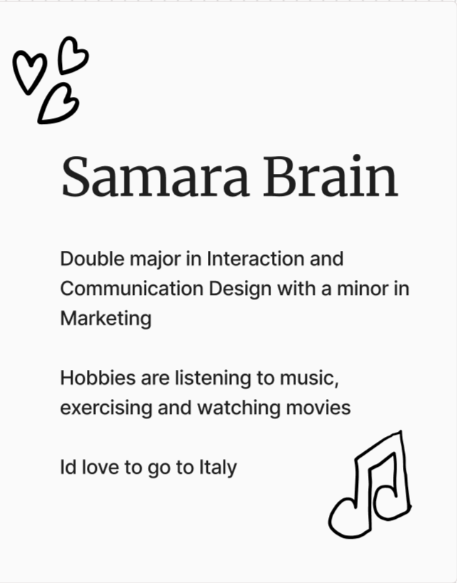
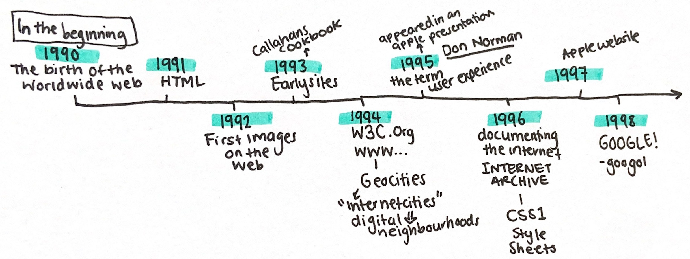
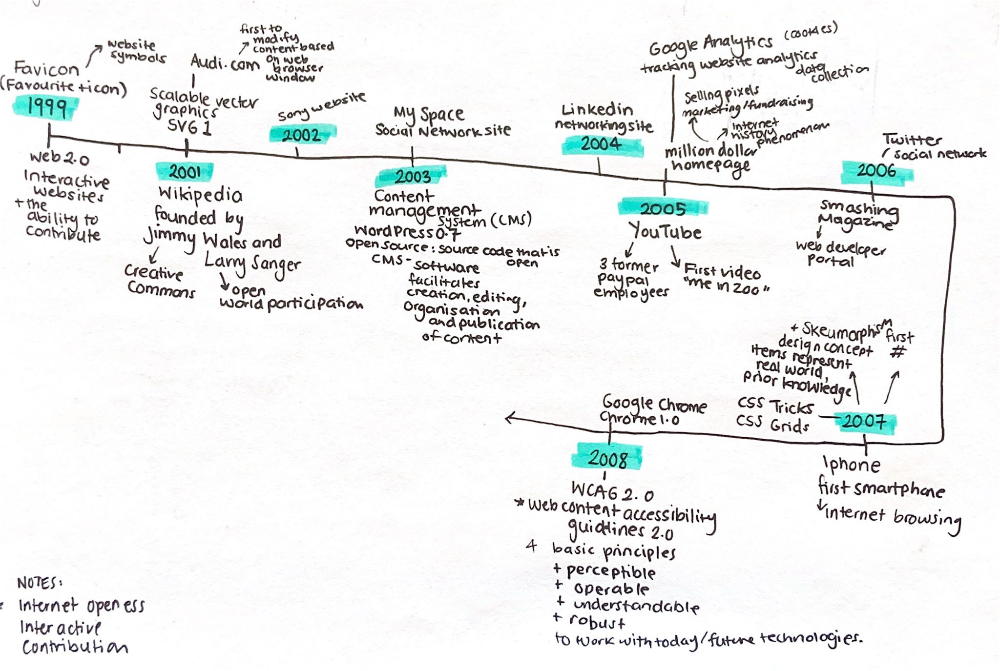
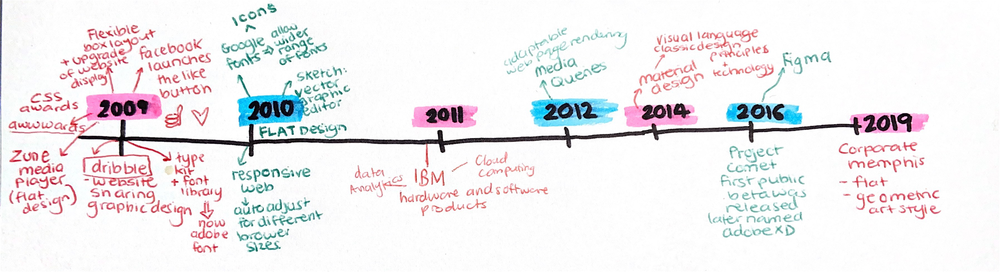
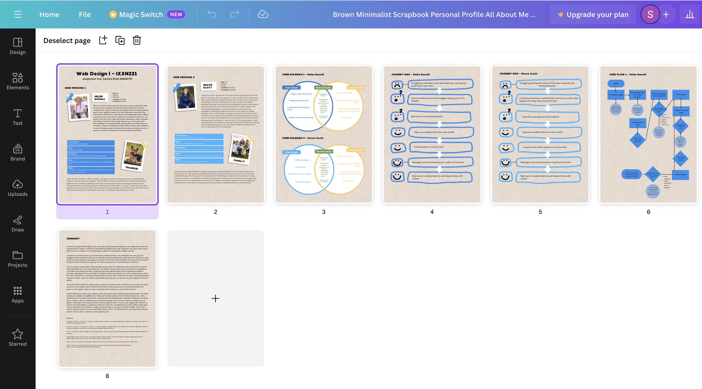
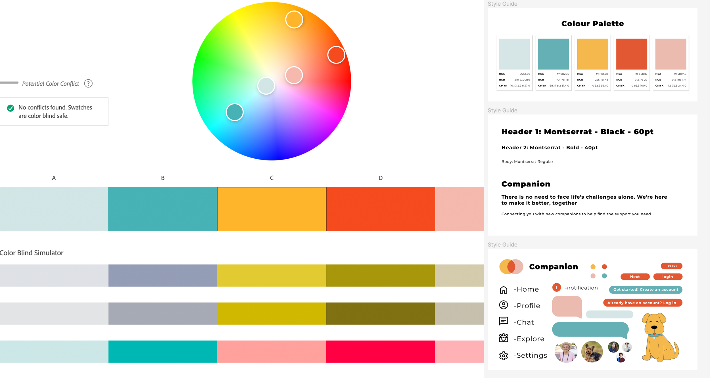

July 10th - August 18th
Hi, I am Samara, and this is my Weekly Blog for Web Design 1. I am in my Second year at Victoria University of Wellington studying a Bachelor of Design, majoring in Communications and Interaction Design.
I have learned many new skills and had lots of fun being a part of the Web Design course, and I plan to continue into next year to develop my knowledge further. The Web Design course ran over the year's second trimester, and the first half was all about introductions, learning the basics about the World Wide Web and Coding before jumping into Assignment One.

The first week back at University was a short class summarising the course overview and introducing tutors and classmates. We made name tags on a Miro board (mine pictured above). This was a fun way to learn about others and gain familiarity with the Miro website, a tool we will use in upcoming tutorials. In the discussion, I didn't speak up and introduce myself. I find online classes to be more challenging regarding active engagement and involvement. In-person classes involve getting ready to leave my flat, walking to class and physically sitting in a studio, which all help me to feel focused and productive. I need to find a routine to get into this headspace before this class and work on my engagement over the semester.
The introduction to the course got me excited as I really enjoyed the User Experience course in semester one and can't wait to further my knowledge and abilities in interaction design. I do not have any experience in coding, so looking at the assignment briefs this will definitely be the biggest challenge for me.

In the first half of today's tutorial, we began the first segment of lectures about the history of the Internet. I found it interesting to learn that the Internet is not much older than me. In my lifetime, it has rapidly developed into what it is today. This makes me wonder where the Internet will be in the next 20 years.
We did our first workshop in class today, where we looked into creating user personas. We were split into breakout rooms, and I found hearing other people's ideas and processes for building a user persona interesting and helpful. The tutors' feedback helped me better understand what to consider when making my user persona for Assignment 1. Particularly the discussion around considering accessibility when designing for a specific group/persona. We discussed the consideration of circumstances (age, culture, location, job, goals etc) where individuals have access to different things. Therefore, when designing for a specific user, it is essential to consider what is accessible to them and, more importantly, how you could help make things more accessible.

Continuing from last week's lesson, we looked further into the history of the Internet, and I have developed my user persona for Assignment 1. I have ended up with two user personas as the issues faced by one user group are resolved by the other, forming this relationship where each group helps each other. Doing a project where I am creating a website to benefit two parties means I have to consider how to make it appeal to two user groups who are very different. I am excited to do something that challenges my thinking skills.
Today's lesson moved on to using the user personas and building a Venn Diagram with user goals and designed goals and how they come together to make shared goals. At first, I needed clarification on narrowing down the design goals, but then I realised I should use the user goals from my user persona to guide the designer goals. For example, my website needs to be easy to use as one of my user groups is elderly people. Therefore one of my design goals is to ensure my design is simple and the user pathway is straightforward.

This week, we finished the timeline of the History of the Internet and looked into the next stage of Assignment One, the Journey map and user flows. A journey map is the visualisation of the steps your user takes or goes through while engaging with your site, looking into their experience and the feelings they experience throughout the interaction. Understanding user experiences and feelings is essential to creating intuitive web experiences that foster positive outcomes. A user flow is also a visualisation of the user path. It outlines the user flow and the sequence of actions, decisions and steps they take to achieve their objective. It is important to establish the user flow to help guide the pages and features needed when designing the website.
I have been following along with the weekly coding lectures in the course so far and am slowly picking up the basic skills. I have never done any coding before, so I find the coding aspect of the course very difficult. I am confident with setting up the HTML and CSS pages and adding headers, texts and images. I am struggling with the CSS grid and laying out all the components, so I plan on doing some of the tutorials on w3schools.

This week is the last lesson before the Assignment 1 hand-in. I have been making good progress with my assignment and used today to check in with the tutors to ensure everything I had done so far was correct and address any questions or concerns. My main questions were about the difference between journey maps and user flow. In previous courses, I have used journey maps to observe the pain points in a process to direct my design to resolve these issues. This is why I was confused about how to make a journey map based on a desired interaction and how it would differentiate from the user flow.
Coming out of the feedback session, I now understand that the journey map is the big-picture interaction, including the before and after steps of using the website. For example, how did they learn about the website, and how did they access it? In comparison, the user flow is the step-by-step process of the user's interaction with the actual interface. With Assignment One coming to an end, I am starting to form a vision for my website that I want to move on to create in Assignment Two.

Now that Assignment One has been submitted, we're transitioning to Assignment Two. As the semester break is approaching, I want to clarify what needs to be accomplished before our next class. I aim to complete my wireframes and develop my brand identity, including the colour scheme, typography, and essential design elements.
Choosing colour and typography plays a key role in establishing the tone of a website. Colours and fonts tend to have associations, and it is important to consider the intention of a website and who the target audience is when selecting these elements. Since I have two user groups, one being elderly people and one being students, it was important for me to find a balance between the preferences of these two groups. When selecting my colour palette and typography, I wanted to make it fun and colourful for younger audiences but ensure I focused on accessibility for older people. With old age, eyesight can deteriorate, so I used the Adobe colour website from the lecture to ensure my colour contrast ratio was visible to different visual impairments. I also decided to use a san-serif font as they are modern, to appeal to younger users and are easy to read, which appeals to older users.